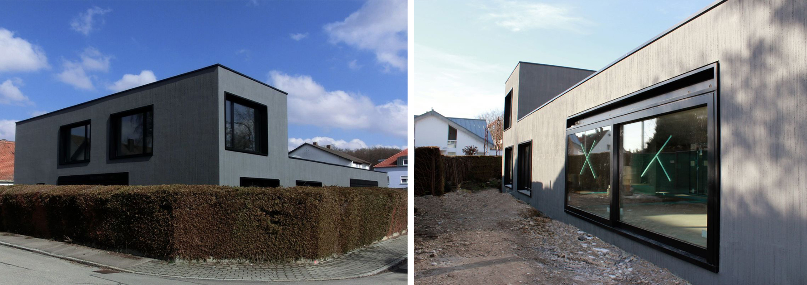
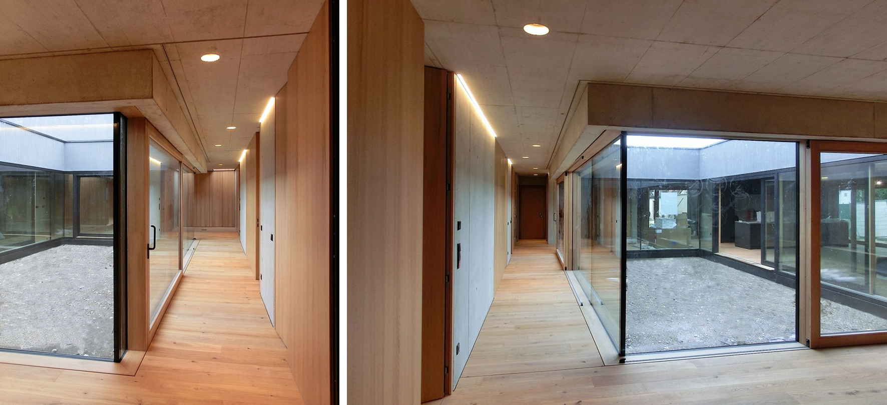
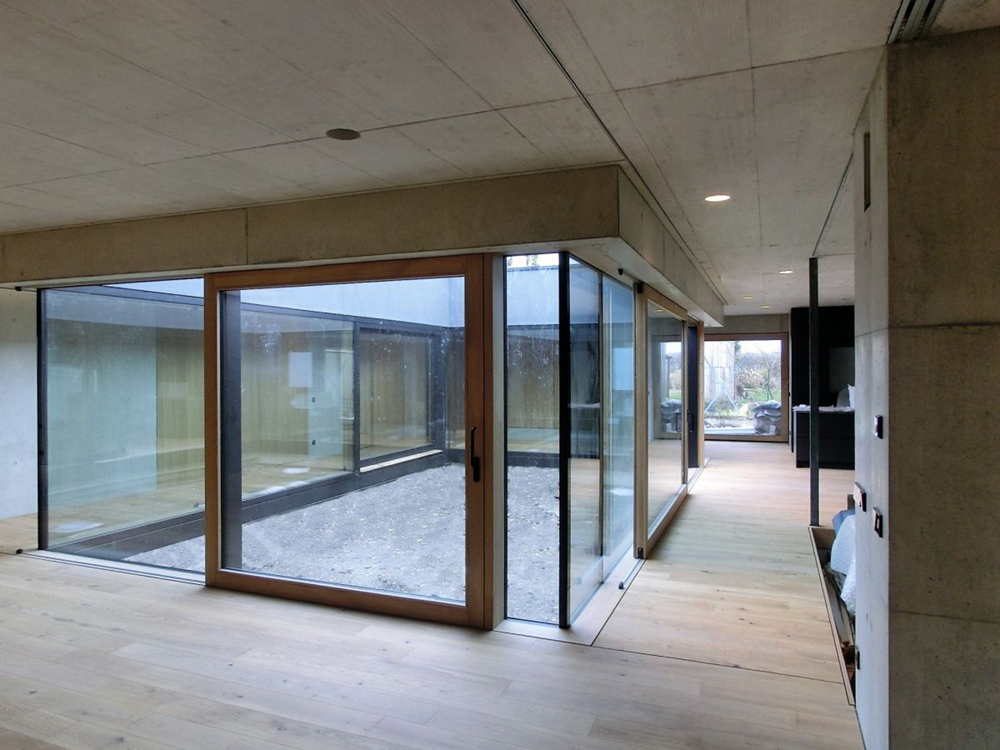
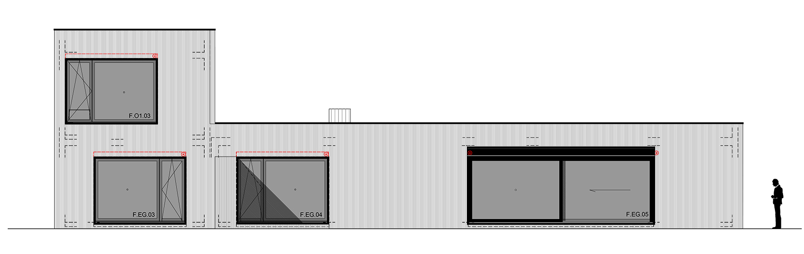

-

vista exterior

vista hacia el estudio

vista pasillo de las habitaciones

vista del patio

alzado sur

alzado este

alzado norte

alzado oeste

planta baja

primera planta

detalle constructivo patio
El proyecto, un complejo de 520 m2 que alberga 2 viviendas unifamiliares para 2 hermanos se encuentra situado en la ciudad alemana de Ingolstadt.
La primera de las viviendas, de 3 habitaciones, se distribuye en una única planta alrededor de un patio, que ilumina el interior, organiza los espacios en función de la privacidad y funciona como el corazón de la casa. Así, las zonas privadas (habitaciones y aseos) se encuentran a un lado del patio, y las públicas (salón, cocina y estudio) al otro lado, organizándose las circulaciones alrededor de éste.

La segunda vivienda, de 2 habitaciones, está distribuida en 2 plantas. En la fachada norte tenemos un bloque formado por escalera y aseos y en la sur los salones de ambas plantas.
Entendidas se articulan la cocina-comedor en la planta baja, y los 2 dormitorios en la planta superior.

En cuanto a los materiales utilizados se emplea hormigón visto para techos y algunas paredes y madera, para suelos, puertas y paredes.
La iluminación se integra en el hormigón, ya sea en forma de punto de luz, lucernario o línea de luz (alrededor del patio).